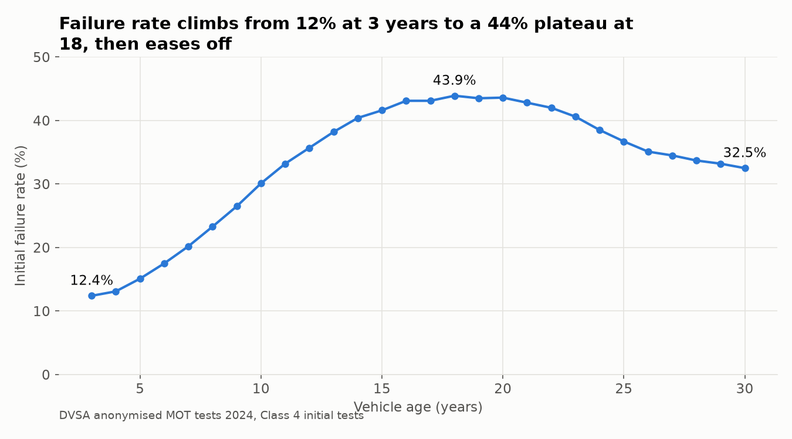
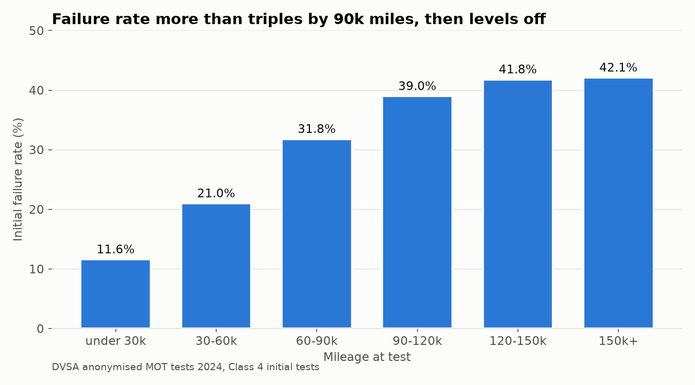
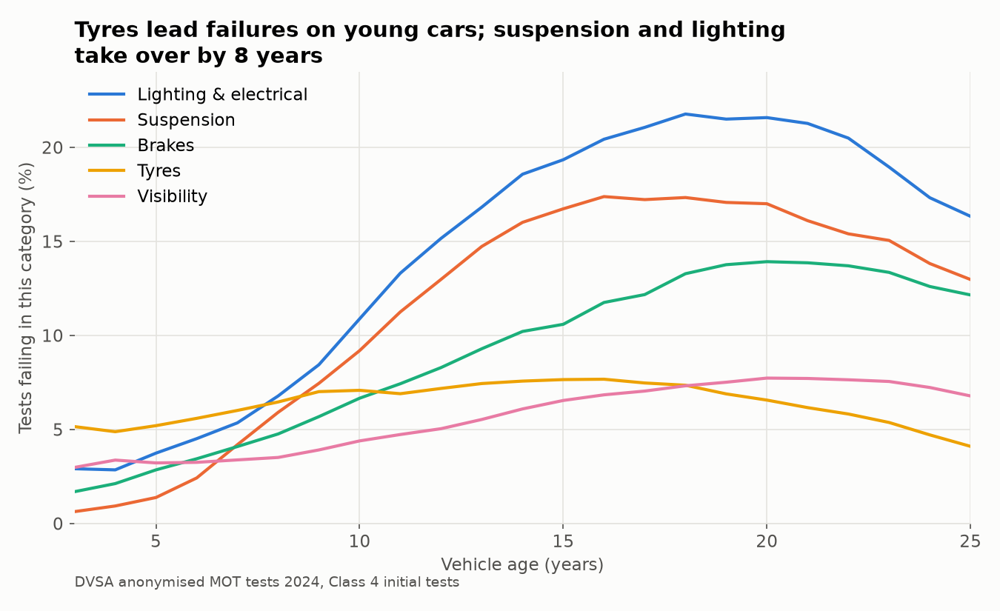
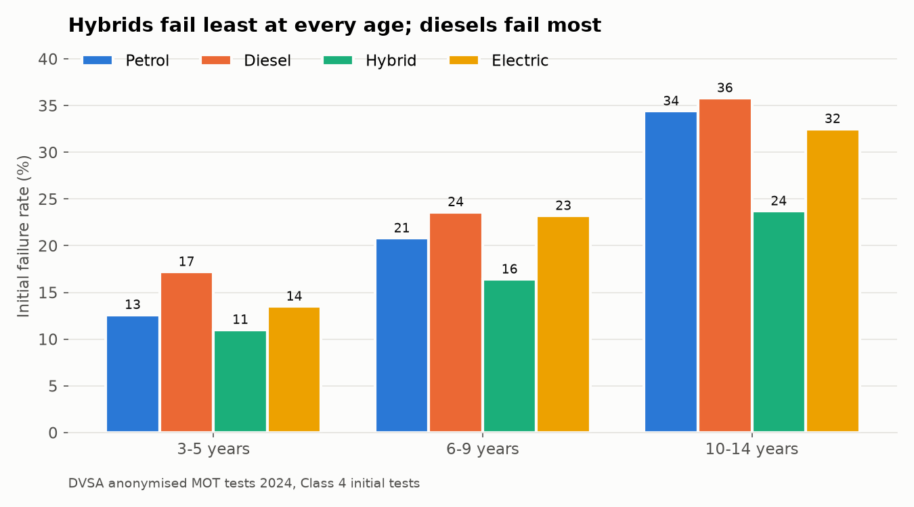
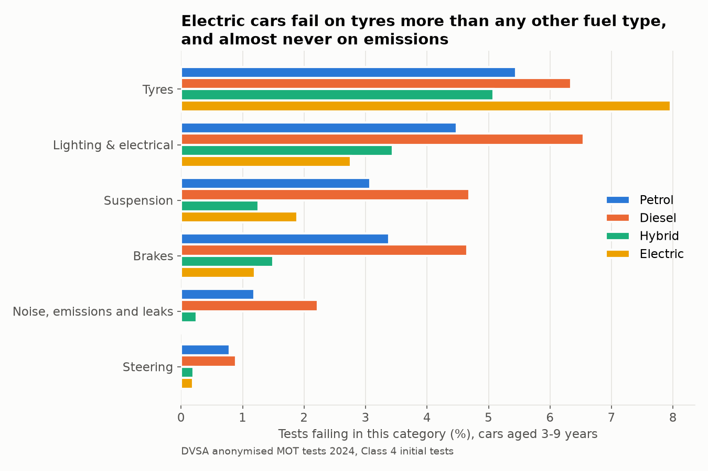
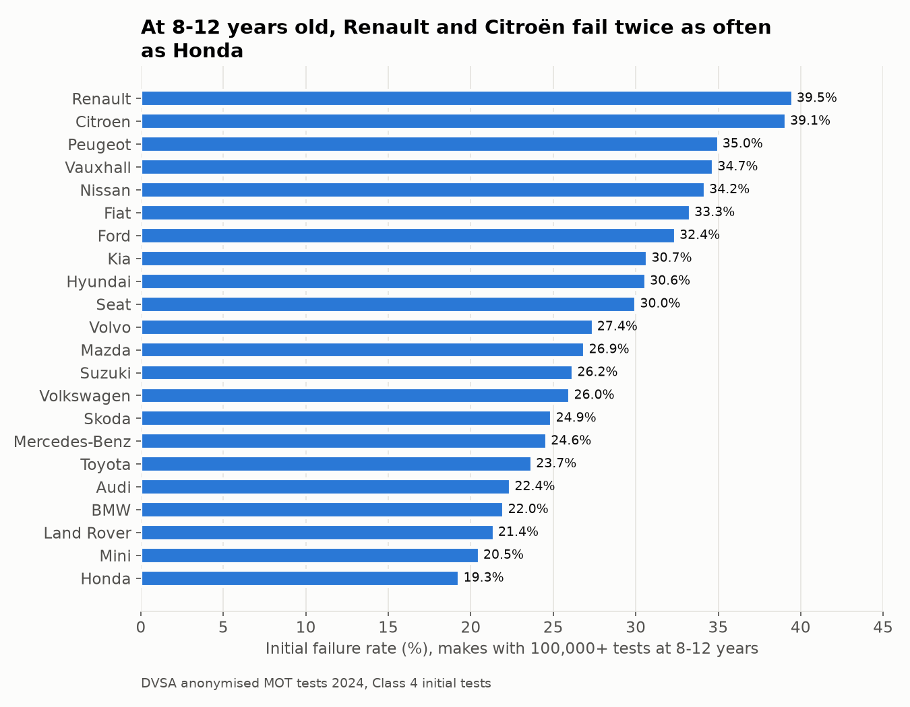
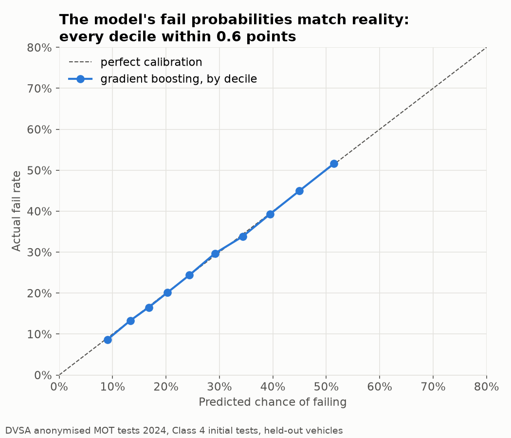
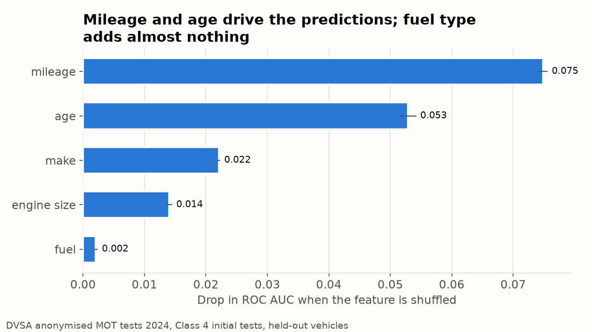

An analysis of every MOT test carried out in Great Britain in 2024 (42 million tests and 92 million defect and advisory records from the DVSA), built with SQL in DuckDB and Python. I'm a mechanical engineer, so the questions are engineering ones: which systems wear out as cars age, and how failures differ between petrol, diesel, hybrid and electric cars.
Scope of the numbers below: cars and light vans (Class 4), initial tests only, results pass, fail or PRS (fixed within an hour). That's 32,968,239 tests.
Key findings
1. 28.3% of cars fail their MOT first time. 22.8% still fail after on-the-spot repairs. Both figures are in line with DVSA's published statistics, which confirms the cleaning hasn't distorted the data.
2. The failure rate rises with age and peaks at 18 years, then falls. It goes from 12.4% at 3 years to 43.9% at 18, then drops to 32.5% at 30. The likely reason is survivorship: a car still on the road at 25 is usually one somebody looks after.

3. Mileage has the same shape. The failure rate more than triples from under 30k miles (11.6%) to 90–120k (39.0%), then levels off at about 42%.

4. Different systems fail at different ages. On a 3-year-old car, tyres are the top cause of failure. They're a wear item that depends on the driver, not the car's age, so they stay flat at 5–8% throughout. The systems that do deteriorate with age overtake tyres by about 8 years: suspension rises 27-fold (0.6% to 17.3% of tests, as springs corrode and bushes and joints wear), lighting and electrical from 2.9% to 21.8%, and brakes from 1.7% to 13.9%.

5. Hybrids fail least at every age, and diesels fail most. Comparing within the same age band, so newer hybrid and electric fleets aren't flattered: at 3–5 years, 11.0% of hybrids fail, against 12.6% of petrol cars and 17.2% of diesels.

6. Electric cars fail differently. At 3–9 years, tyres are the only main category where electric cars fail more often than any other fuel type: 8.0% of tests, against 5.5% for petrol. That fits the engineering, since EVs are heavier and deliver instant torque. They almost never fail on emissions and leaks (0.01%), and they fail least on brakes (1.2%), probably because regenerative braking does much of the work.

7. Make matters, even at the same age. Among cars aged 8–12 years, Renault (39.5%) and Citroën (39.1%) fail about twice as often as Honda (19.3%). Lighting or suspension is the top failure category for almost every make. Audi (tyres) and Kia (brakes) are the exceptions.

Can a model predict a fail?
I trained models to predict an initial fail from the five facts the data holds about each car: age, mileage, make, fuel type and engine size. I used a 5% sample of vehicles (1.6 million tests), split by vehicle so no car appears in both the training and test sets.
| Model | ROC AUC | Brier score | Better than guessing the average |
|---|---|---|---|
| Baseline (predict 28% for every car) | 0.500 | 0.203 | n/a |
| Logistic regression (splines for age and mileage) | 0.687 | 0.185 | 8.6% |
| Gradient-boosted trees | 0.692 | 0.184 | 9.0% |
8. Basic facts about a car explain only part of an MOT result. The best model ranks a failing car above a passing one 69% of the time. Its probabilities are very well calibrated: in every risk decile the prediction is within 0.6 points of reality, and the riskiest tenth of cars fails six times as often as the safest (51.6% against 8.7%). But it never predicts much more than a 50% chance, because most of what decides a fail (maintenance, driving conditions, the tester) isn't in the data. A simple logistic regression does almost as well as the trees, so the effects are mostly smooth and independent.

9. Mileage and age carry the predictions, and fuel type adds almost nothing once those are known. That suggests much of the diesel gap in finding 5 is a mileage effect, because diesels are typically bought for high-mileage driving.

The natural next step is the car's own history. Adding 2023 data would let a model use last year's result and advisories for the same vehicle_id.
Caveats
- Make comparisons only control for age. Mileage, owner type and maintenance differ between makes and aren't adjusted for.
- 167,725 tests (0.4%) were excluded because their records in the source files contradicted each other. A bias check on January found a fail rate of 29.4% for those tests, against 30.0% for the rest, so excluding them barely moves the overall rate.
- The electric fleet is young. Only 18,422 electric cars aged 10–14 were tested, and within the 3–9 band most EVs are 3–5 years old.
- Some mileages and first-use years were set to missing because they were placeholders or typing errors: 330,098 mileages, and about 30 first-use years such as 94 or 1012. The rules are in the data dictionary, section 7.
- These are associations, not causes. The explanations above (survivorship, battery weight, regenerative braking, diesel mileage) are hypotheses the data is consistent with, not ones it proves.
Method
- Load. 24 monthly CSV files (about 12 GB), all read as text into DuckDB. The files differ from the official user guide in several ways: they use commas rather than pipes, use backslash escapes, repeat the header row inside the files, and populate the "dangerous" marker the guide says is empty.
- Clean. Exact duplicate rows are removed. Tests whose rows still disagree are recorded in their own table and excluded. Types are converted deliberately, and each cleaning rule is documented with the number of rows it affects.
- Label. Each defect is joined through the DVSA lookup tables to its severity (dangerous, major or minor) and its top-level system (brakes, suspension and so on). 99.997% of items match.
- Analyse. SQL with CTEs and window functions, using DVSA's own metric definitions. Comparisons hold age fixed wherever fleet age would otherwise distort them.
- Model. A baseline, then logistic regression, then gradient-boosted trees, evaluated on held-out vehicles for ranking (AUC), probability quality (log loss, Brier) and calibration.
- Check. Every table is reconciled against a count I already trust. The expected numbers are listed in docs/instructions.md, section 11, and
src/load_db.pyprints them after every build.
| Notebook | What it does |
|---|---|
| 01_exploration | First look at the raw files |
| 02_load_and_clean | Works out and builds the clean results and item tables, step by step |
| 03_lookups | Loads the lookups and labels each defect with its system |
| 04_analysis | Analysis queries, findings and charts |
| 05_modelling | Predicting an initial fail |
The finished cleaning steps also live in sql/ as plain SQL files, run in order by src/load_db.py. That rebuild reproduces every reconciliation number exactly.
Reproduce it
python -m venv .mot
source .mot/bin/activate
pip install -r requirements.txt
python src/download_data.py # 2.2 GB of zips from data.gov.uk, unzipped into data/raw/
python src/load_db.py # builds data/mot.duckdb (about 21 GB) and prints the reconciliation counts
Then open notebooks/04_analysis.ipynb and 05_modelling.ipynb and run them from inside notebooks/.
Try it without the download: data/sample/ holds every raw row for 1 in 4,000 vehicles (10,833 tests, with their duplicates and items), plus the lookup tables. python src/load_db.py --raw data/sample builds a small database in seconds, and both notebooks run on it, although the numbers are noisier.
Note on the lookup tables: the lookup.zip currently on data.gov.uk is a newer release than the one this analysis used. It drops 36 retired defect codes, so 24,255 items (0.03%) get no category instead of 2,699. The headline results don't change. data/sample/lookup/ has the exact version used here.
Data: DVSA, Anonymised MOT tests and results, 2024. Contains public sector information licensed under the Open Government Licence v3.0.
Tools: Python, DuckDB, pandas, scikit-learn, matplotlib.